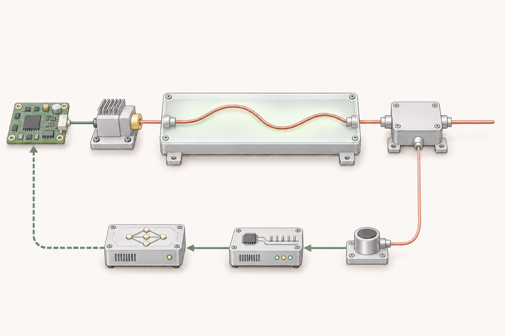
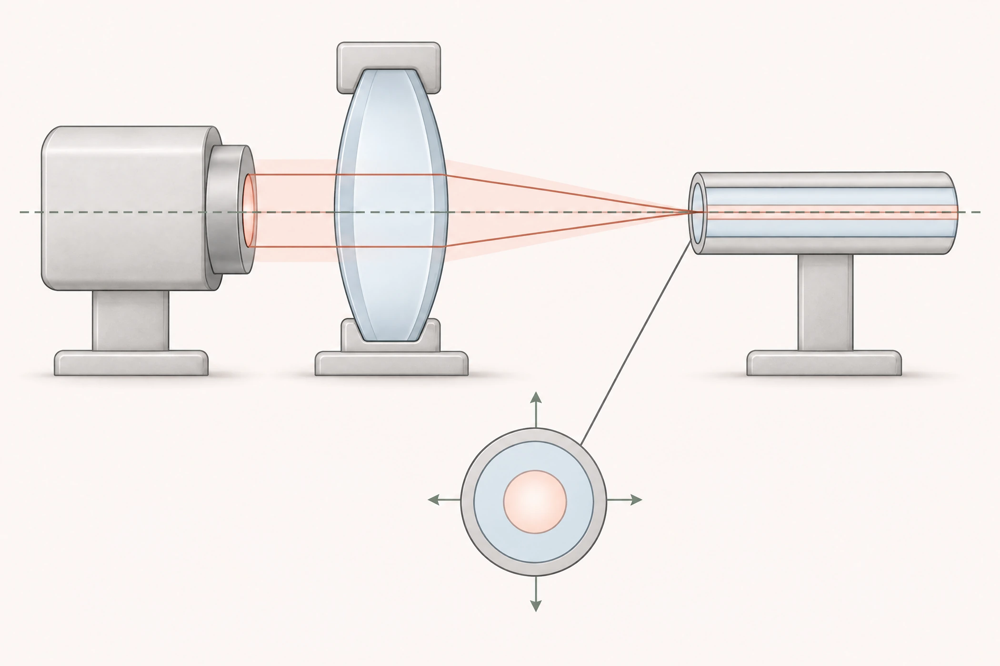

铥激光器 / 驱动控制
电流波形过冲 / 振荡幅度
约 500 → 190 mV
与电子工程师联合调试，过冲 / 振荡幅度由约 500 mV 降至约 190 mV。
医疗激光 / 光机电集成
铥激光器光机电集成，
半导体激光器耦合验证。

开展医疗激光器研发，完成光路装调、布局走线、装配工艺优化、驱动控制开发与整机集成。
铥激光器 / 驱动控制
约 500 → 190 mV
与电子工程师联合调试，过冲 / 振荡幅度由约 500 mV 降至约 190 mV。
半导体激光器 / 光纤耦合
91% / 92%
目标 >88% · 完成光斑调整、光纤耦合与整机安装验证。
恒流驱动板 → LD 泵浦源 → 掺铥光纤 → 耦合器 → 输出光纤
与光学工程师共同完成光纤安装、布局、固定和走线，开展光路及耦合器调试，并结合装配和热状态改进工艺。
针对输出功率偏低等异常，与光学工程师分段检查熔接、发热、漏光、弯曲和耦合状态，共同完成问题定位、现场调试和改进验证。
将激光器工作原理和运行要求转为驱动控制需求，明确关键器件选型方向及电流波形目标，与电子工程师共同完成驱动控制开发、波形调试和整机集成。
结合光学输出、电流波形和热状态开展整机联调，起草技术设计文档与测试方案。联合调试后，电流波形过冲 / 振荡幅度由约 500 mV 降至约 190 mV。
同一系统的末端耦合器连接输出光纤，并为热电堆提供取样。我进一步改进耦合器取样、探测器布置和隔热安装，通过对照试验解决 ADC 读数波动，实现铥激光功率闭环。
方案评估 → 光学调整 → 光纤耦合 → 整机安装 → 输出验证

开展方案评估、器件选型与测试环境搭建，比较镜片、激光器、光纤和工作条件对光斑与耦合的影响。
调整镜片和光斑，开展光纤耦合，并按测试结果优化光学参数。
配合供电、散热与安装调试，针对孔位匹配问题推进结构件加工，完成重新装配和输出验证。
激光器至光纤输出耦合效率达到 91% / 92%（目标 >88%）。